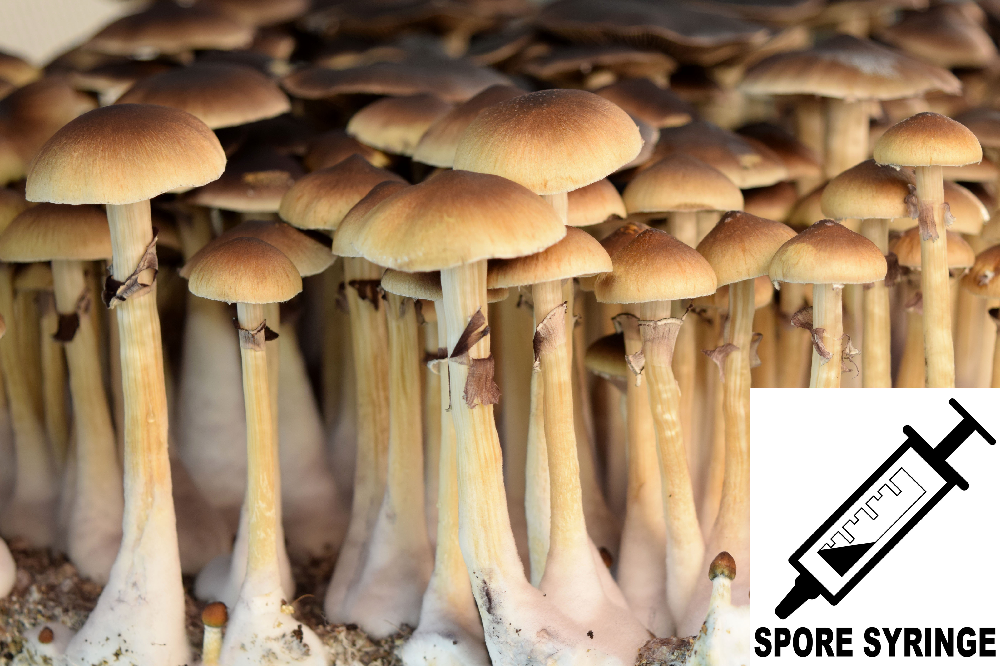

Curated Fungi for
Wellness & Research.
Discover the highest quality functional mushroom supplements for optimal performance, and premium genetics for microscopy research.
Discover the highest quality functional mushroom supplements for optimal performance, and premium genetics for microscopy research.
Premium, sterile spore syringes and prints intended strictly for microscopy and taxonomy research purposes.
Mushroom spore microscopy is a fundamental practice in mycology, serving as a critical bridge between macroscopic observation and scientific classification. Fungal taxonomy relies heavily on microscopic evaluation of spores—measuring diagnostic traits such as size, shape, and surface ornamentation—to accurately define and differentiate species.
By documenting these structural details, independent researchers contribute to vital biodiversity conservation and mapping of the fungal kingdom. (Reference: Hawksworth, D. L. (2001). The magnitude of fungal diversity. Mycological Research, 105(12), 1422-1432.)
LEGAL NOTICE: All spores provided by our affiliate partners are strictly for microscopy, taxonomy, and research purposes. Cultivation of certain species is illegal in many jurisdictions. Any intent or mention of cultivation will result in immediate cancellation of orders by the vendors. Spores cannot be shipped to California, Idaho, or Georgia.

Official SporeWorks 10ml aqueous spore suspension. Guaranteed sterile and heavily loaded with dense, observable Psilocybe cubensis genetics for microscopy.
Check Price
Dark, heavy spore deposits collected under strict sterile conditions. Ideal for long-term genetic preservation and deep taxonomic analysis.
Check PriceHigh-end adaptogens and wellness blends to support cognitive function, immunity, and sustained energy.
Functional mushrooms have been extensively studied for their physiological benefits. Hericium erinaceus (Lion's Mane) is celebrated in neurological research for containing bioactive compounds like hericenones and erinacines, which have been shown in preclinical models to stimulate Nerve Growth Factor (NGF) and promote neurogenesis. (Reference: Mori, K., et al. (2009). Improving effects of the mushroom Yamabushitake on mild cognitive impairment. Phytotherapy Research, 23(3), 367-372.)
Additionally, Cordyceps militaris is recognized in sports science for its capacity to upregulate cellular ATP production, thereby enhancing cardiovascular endurance and metabolic efficiency during sustained physical exertion. (Reference: Hirsch, K. R., et al. (2017). Cordyceps militaris Improves Tolerance to High-Intensity Exercise. Journal of Dietary Supplements, 14(1), 42-53.)
FDA Disclaimer: These statements have not been evaluated by the Food and Drug Administration. These products are not intended to diagnose, treat, cure, or prevent any disease.

Formulated by Paul Stamets. Organic, freeze-dried mushroom mycelium supporting cognitive clarity, memory, and nerve health.
Check Price
A delicious, potent daily blend of Reishi, Chaga, and Cordyceps extracts to balance stress and enhance daily vitality.
Check Price